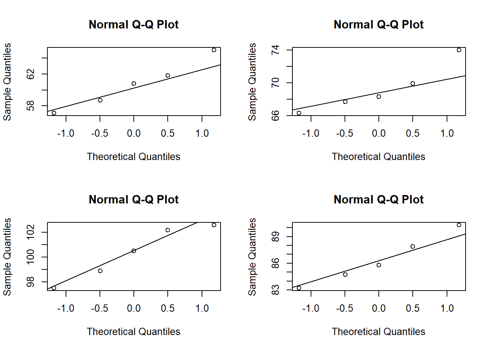

7.1 Logistic Regression
Logistic regression estimates the probability of a particular level of a categorical response variable given a set of predictors. The response levels can be binary, nominal (multiple categories), or ordinal (multiple levels).
The binary logistic regression model is
\[y = logit(\pi) = \ln \left( \frac{\pi}{1 - \pi} \right) = X \beta\]
where \(\pi\) is the event probability. The model predicts the log odds of the response variable. The maximum likelihood estimator maximizes the likelihood function
\[L(\beta; y, X) = \prod_{i=1}^n \pi_i^{y_i}(1 - \pi_i)^{(1-y_i)} = \prod_{i=1}^n\frac{\exp(y_i X_i \beta)}{1 + \exp(X_i \beta)}.\]
There is no closed-form solution, so GLM estimates coefficients with interatively reweighted least squares.
Here is a case study to illustrate the points. Dataset leuk contains response variable REMISS indicating whether leukemia remission occurred (1|0) and several explanatory variables.
## Observations: 27
## Variables: 7
## $ REMISS <dbl> 1, 1, 0, 0, 1, 0, 1, 0, 0, 0, 0, 0, 0, 0, 0, 1, 0, 0, 0, 1, ...
## $ CELL <dbl> 0.80, 0.90, 0.80, 1.00, 0.90, 1.00, 0.95, 0.95, 1.00, 0.95, ...
## $ SMEAR <dbl> 0.83, 0.36, 0.88, 0.87, 0.75, 0.65, 0.97, 0.87, 0.45, 0.36, ...
## $ INFIL <dbl> 0.66, 0.32, 0.70, 0.87, 0.68, 0.65, 0.92, 0.83, 0.45, 0.34, ...
## $ LI <dbl> 1.9, 1.4, 0.8, 0.7, 1.3, 0.6, 1.0, 1.9, 0.8, 0.5, 0.7, 1.2, ...
## $ BLAST <dbl> 1.10, 0.74, 0.18, 1.05, 0.52, 0.52, 1.23, 1.35, 0.32, 0.00, ...
## $ TEMP <dbl> 1.00, 0.99, 0.98, 0.99, 0.98, 0.98, 0.99, 1.02, 1.00, 1.04, ...Fit a logistic regression.
##
## Call:
## glm(formula = REMISS ~ ., family = binomial(link = logit), data = leuk)
##
## Deviance Residuals:
## Min 1Q Median 3Q Max
## -1.95404 -0.66259 -0.02516 0.78184 1.57465
##
## Coefficients:
## Estimate Std. Error z value Pr(>|z|)
## (Intercept) 64.25808 74.96480 0.857 0.391
## CELL 30.83006 52.13520 0.591 0.554
## SMEAR 24.68632 61.52601 0.401 0.688
## INFIL -24.97447 65.28088 -0.383 0.702
## LI 4.36045 2.65798 1.641 0.101
## BLAST -0.01153 2.26634 -0.005 0.996
## TEMP -100.17340 77.75289 -1.288 0.198
##
## (Dispersion parameter for binomial family taken to be 1)
##
## Null deviance: 34.372 on 26 degrees of freedom
## Residual deviance: 21.594 on 20 degrees of freedom
## AIC: 35.594
##
## Number of Fisher Scoring iterations: 8“z value” is the Wald z statistic, \(z = \hat{\beta} / SE(\hat{\beta})\), which if squared is the Wald chi-squared statistic, \(z^2 = \left(\hat{\beta} / SE(\hat{\beta}) \right)^2\). The p.value is the area to the right of \(z^2\) in the \(\chi_1^2\) density curve.
m1 %>% tidy() %>%
mutate(
z = estimate / std.error,
p_z2 = pchisq(z^2, df = 1, lower.tail = FALSE)
) %>%
select(term, p.value, p_z2)## # A tibble: 7 x 3
## term p.value p_z2
## <chr> <dbl> <dbl>
## 1 (Intercept) 0.391 0.391
## 2 CELL 0.554 0.554
## 3 SMEAR 0.688 0.688
## 4 INFIL 0.702 0.702
## 5 LI 0.101 0.101
## 6 BLAST 0.996 0.996
## 7 TEMP 0.198 0.198The “dispersion parameter” refers to overdispersion, a common issues with GLM. For a logistic regression, the response variable should be distributed \(y_i \sim Bin(n_i, \pi_i)\) with \(\mu_i = n_i \pi_i\) and \(\sigma^2 = \pi (1 - \pi)\). Overdispersion means the data shows evidence of variance greater than \(\sigma^2\).
“Fisher scoring” is a method for ML estimation. Logistic regression uses an iterative procedure to fit the model, so this section indicates whether the algorithm converged.
The log odds of having achieved remission when each predictor equals its mean value is \(\hat{y} = -2.68\).
## 1
## -2.684382Log odds are not easy to interpet, but are convenient for updating prior probabilities in Bayesian analyses. Exponentiate the log odds to get the more intuitive odds.
\[\exp (\hat{y}) = \exp (X \hat{\beta}) = \frac{\pi}{1 - \pi}.\]
The odds of having achieved remission when each predictor equals its mean value is \(\exp(\hat{y}) = 0.068\).
## 1
## 0.06826334A common way to express this is with the inverse, 1 / 0.068 = 15:1. The odds of having achieved remission when each predictor equals its mean value is “15 to 1”.
## 1
## 15Or, solve for \(\pi\) to get the probability.
\[\pi = \frac{\exp (X \beta)}{1 + \exp (X \beta)}\]
The probability of having achieved remission when each predictor equals its mean value is \(\pi = 0.064\). The predict() function for a logistic model returns log-odds, but can also return \(\pi\) by specifying parameter type = "response".
## 1
## 0.06390123Interpret the coefficient estimates using the odds ratio, the ratio of the odds before and after an increment to the predictors. The odds ratio is how much the odds would be multiplied after a \(X_1 - X_0\) unit increase in \(X\).
\[\theta = \frac{\pi / (1 - \pi) |_{X = X_1}}{\pi / (1 - \pi) |_{X = X_0}} = \frac{\exp (X_1 \hat{\beta})}{\exp (X_0 \hat{\beta})} = \exp ((X_1-X_0) \hat{\beta}) = \exp (\delta \hat{\beta})\]
Increasing LI by .01 increases the odds of remission by a factor of \(\exp(0.1 \cdot 4.36) = 1.547\) (from 15:1 to 23:1).
## (Intercept) CELL SMEAR INFIL LI BLAST
## 617.580 21.824 11.806 0.082 1.547 0.999
## TEMP
## 0.000You can calculate an odds ratio with specified increments using oddsratio::or_glm().
oddsratio::or_glm(data = leuk, model = m1,
incr = list(
CELL = 0.01, SMEAR = 0.01, INFIL = 0.05, LI = 0.1, BLAST = 1.0, TEMP = 0.03
)
)## # A tibble: 6 x 5
## predictor oddsratio `CI_low (2.5)` `CI_high (97.5)` increment
## <chr> <dbl> <dbl> <dbl> <chr>
## 1 CELL 1.36 0.747 4.64 0.01
## 2 SMEAR 1.28 0.537 5.15 0.01
## 3 INFIL 0.287 0 33.1 0.05
## 4 LI 1.55 1.04 2.99 0.1
## 5 BLAST 0.989 0.009 91.0 1
## 6 TEMP 0.05 0 2.02 0.03The predicted values can also be expressed as the probabilities \(\pi\). This produces the familiar signmoidal shape of the binary relationship.
augment(m1, type.predict = "response") %>%
ggplot(aes(x = LI)) +
geom_point(aes(y = REMISS)) +
geom_line(aes(y = .fitted)) +
theme_mf() +
labs(x = "LI",
y = "Probability of REMISS",
title = "Binary Fitted Line Plot")
Evaluate a logistic model fit with an analysis of deviance. Deviance is defined as -2 times the log-likelihood \(-2l(\beta)\). The null deviance is the deviance of the null model and is analagous to SST in ANOVA. The residual deviance is the deviance of the full model and is analagous to SSE in ANOVA.
## 'log Lik.' 21.59385 (df=7)anova() computes the analysis of deviance table for the model.
## Analysis of Deviance Table
##
## Model: binomial, link: logit
##
## Response: REMISS
##
## Terms added sequentially (first to last)
##
##
## Df Deviance Resid. Df Resid. Dev
## NULL 26 34.372
## CELL 1 2.5800 25 31.792
## SMEAR 1 0.5188 24 31.273
## INFIL 1 0.2927 23 30.980
## LI 1 6.7818 22 24.199
## BLAST 1 0.3271 21 23.871
## TEMP 1 2.2775 20 21.594The deviance of the null model (no regressors) is 34.372. The deviance of the full model is 21.594. glance() also returns the null and residual deviances.
## # A tibble: 1 x 7
## null.deviance df.null logLik AIC BIC deviance df.residual
## <dbl> <int> <dbl> <dbl> <dbl> <dbl> <int>
## 1 34.4 26 -10.8 35.6 44.7 21.6 20Use the GainCurvePlot() function to plot the gain curve (background on gain curve at Data Science Central from the model predictions. The x-axis is the fraction of items seen when sorted by the predicted value, and the y-axis is the cumulative summed true outcome. The “wizard” curve is the gain curve when the data is sorted by the true outcome. If the model’s gain curve is close to the wizard gain curve, then the model sorted the response variable well. The grey area is the gain over a random sorting.
augment(m1) %>% data.frame() %>%
GainCurvePlot(xvar = ".fitted", truthVar = "REMISS", title = "Logistic Model")
REMISS equals 1 in 9 of the 27 responses.
- The wizard curve shows that after sorting the responses it encounters all 9 1s (100%) after looking at 9 of the 27 response (33%).
- The bottom of the grey diagonal shows that after making random predictions and sorting the predictions, it encounters only 3 1s (33%) after looking at 9 of the 27 responses (33%). It has to look at all 27 responses (100%) to encounter all 9 1s (100%).
- The gain curve encounters 5 1s (55%) after looking at 9 of the 27 responses (33%). It has to look at 14 responses to encounter all 9 1s (100%).
Another way to evaluate the predictive model is the ROC curve. It evaluates all possible thresholds for splitting predicted probabilities into predicted classes. This is often a much more useful metric than simply ranking models by their accuracy at a set threshold, as different models might require different calibration steps (looking at a confusion matrix at each step) to find the optimal classification threshold for that model.
## Warning: package 'caTools' was built under R version 3.6.2
## [,1]
## 0 vs. 1 0.89506177.1.1 Case Study
This case study is from PSU STAT 504. This study investigated the gender differences in Piaget’s water level test. 166 subjects performed the test and other tests of knowledge and spatial ability.
Here are the pass/fail results of the study by sex.
##
## fail pass
## M 0.3559 0.6441
## F 0.7009 0.2991The pass rates are very different. The Pearson Chi-squared test of equality of two proportions calculates a Chi-Square value of 18.562, p-value < 0.0001, so reject the hypothesis that the pass rates are the same.
##
## Pearson's Chi-squared test
##
## data: table(h2o$sex, h2o$y)
## X-squared = 18.562, df = 1, p-value = 1.645e-05Fit a logistic regression.
## Analysis of Deviance Table
##
## Model: binomial, link: logit
##
## Response: y
##
## Terms added sequentially (first to last)
##
##
## Df Deviance Resid. Df Resid. Dev
## NULL 165 226.04
## sex 1 18.658 164 207.38The likelihood ratio is \(G^2 = 18.658\), so reject the null hypothesis of no sex effect - there is statistically significant difference in pass rates. Here are the coefficient estimators.
## # A tibble: 2 x 5
## term estimate std.error statistic p.value
## <chr> <dbl> <dbl> <dbl> <dbl>
## 1 (Intercept) 0.593 0.272 2.18 0.0292
## 2 sexF -1.44 0.344 -4.20 0.0000271The odds ratio (females vs males) is
## [1] 0.2357895meaning the odds of a female passing are 0.24 times that of a male. Or take the inverse to get the male vs female odds ratio,
## [1] 4.241071meaning the odds of a male passing are 4.24 times that of a female. oddsratio::or_glm() calculates the odds ratio from an increment in the predictor values, in this case, incrementing sex from male to female.
## # A tibble: 1 x 5
## predictor oddsratio `CI_low (2.5)` `CI_high (97.5)` increment
## <chr> <dbl> <dbl> <dbl> <chr>
## 1 sexF 0.236 0.118 0.458 Indicator variableWhat if we control for the results of the gravity test (gravity = number of correct answers on test)? Here is a logistic regression of pass ~ gravity.
## Analysis of Deviance Table
##
## Model: binomial, link: logit
##
## Response: y
##
## Terms added sequentially (first to last)
##
##
## Df Deviance Resid. Df Resid. Dev
## NULL 165 226.04
## gravity 1 42.176 164 183.86The likelihood ratio is \(G^2 = 42.2\), so reject H0 that there is no gravity effect - there is a statistically significant difference between the gravity score and the pass rate. The odds of passing the water level task increase by 2.225 for each additional right answer on gravity.
## # A tibble: 1 x 5
## predictor oddsratio `CI_low (2.5)` `CI_high (97.5)` increment
## <chr> <dbl> <dbl> <dbl> <chr>
## 1 gravity 2.22 1.71 3 1augment(m) %>%
group_by(gravity) %>%
summarize(
observed = mean(as.numeric(y) - 1),
fitted = mean(exp(.fitted) / (1 + exp(.fitted)))
) %>%
pivot_longer(cols = -gravity, names_to = "model", values_to = "rate") %>%
ggplot(aes(x = gravity, y = rate, color = model)) +
geom_point() +
scale_color_mf() +
theme_mf() +
labs(title = "Water Test Pass Rate", color = "")
You can model sex and gravity with and without interaction effects. Here is the model without interaction effects. \(G^2 = 32.3\) so
## Analysis of Deviance Table
##
## Model: binomial, link: logit
##
## Response: y
##
## Terms added sequentially (first to last)
##
##
## Df Deviance Resid. Df Resid. Dev
## NULL 165 226.04
## sex 1 18.658 164 207.38
## gravity 1 32.319 163 175.06## # A tibble: 3 x 5
## term estimate std.error statistic p.value
## <chr> <dbl> <dbl> <dbl> <dbl>
## 1 (Intercept) -1.92 0.574 -3.35 0.000810
## 2 sexF -1.12 0.382 -2.93 0.00334
## 3 gravity 0.740 0.147 5.05 0.000000443